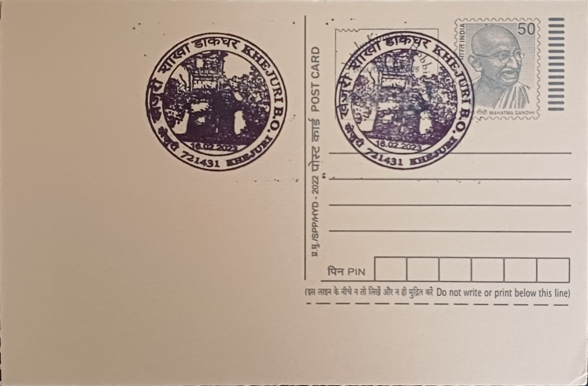

Khejuri Branch Post Office
খেজুরি শাখা ডাকঘর


Khejuri takes its place in the historical record as a coastal settlement in the Contai subdivision of Purba Medinipur district, situated near the mouth of the Hooghly estuary where it opens into the Bay of Bengal. Its name is tied to the wider Khejuri-Hijli tract, a stretch of low-lying shoreline roughly 125 kilometres south of Kolkata that, owing to its navigable approach and strategic position at the river mouth, drew the attention of successive European trading nations from the seventeenth century onward. Long before it became a quiet administrative and postal locality, Khejuri was known chiefly as a point of maritime contact between Bengal's interior and seaborne commerce passing along the eastern coast.
The core significance of Khejuri lies in its layered colonial and maritime history rather than in any single monument or institution. Portuguese traders are recorded as the earliest Europeans to seek a foothold here, followed in turn by Dutch, French, and English trading interests competing for access to the Hooghly's mouth. This made Khejuri, alongside nearby Hijli, one of several minor but strategically useful stations along the Bengal littoral during the era of East India Company expansion, valued less for its size than for the control it offered over river-mouth shipping lanes feeding trade into the Bengal delta.
British interests consolidated their hold over the area through the East India Company, which by the 1760s and 1770s had begun asserting administrative control over Khejuri and Hijli, eventually establishing a customs post and small port facility to regulate and tax the coastal and river traffic passing the estuary. For a period in the late eighteenth century, the port at Khejuri functioned as a working anchorage and factory site, handling trade that moved along the coast before Kolkata's rise as the dominant Hooghly-side port drew shipping and commercial activity upstream. This shift left Khejuri as a secondary, largely residual trading point even as its geographic position remained unchanged.
A distinguishing feature of the Khejuri tract is its continued exposure to the geomorphological instability characteristic of the Bengal delta's seaward edge, with cyclonic storms, tidal surges, and shoreline erosion periodically reshaping the coastline and affecting settlement patterns in the area over the nineteenth and twentieth centuries. This vulnerability, rather than any surviving colonial structure, has been the more persistent force defining life in Khejuri in the centuries since its trading prominence faded, with fishing and paddy cultivation emerging as the area's principal livelihoods in place of the earlier entrepot economy.
Today, Khejuri functions administratively as a community development block within Contai subdivision, divided into Khejuri I and Khejuri II, and the Khejuri Branch Post Office under PIN 721431 forms part of the postal network maintained by the India Post circle serving Purba Medinipur's rural coastal belt. The office handles routine mail and remittance services for surrounding fishing and farming hamlets that have no direct link to the area's seventeenth-century trading past beyond the name itself. In this sense the post office is a modern administrative thread run through a place whose documented history as a contested European trading foothold has long since given way to its present identity as an unremarkable, delta-edge rural outpost of the postal system.
| Date of Introduction | February 16, 2023 |
|---|---|
| Address | Branch Postmaster, |
| Khejuri BO, | |
| Purba Medinpur (dt.), West Bengal - 721431. |